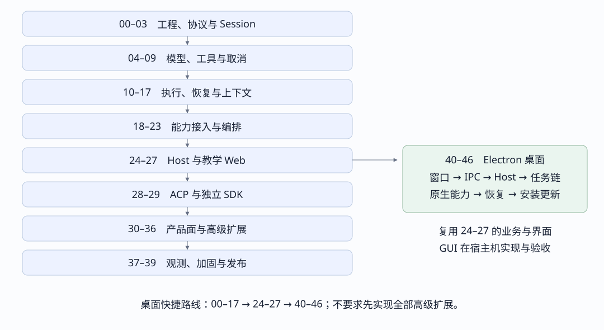

DeepSeek Harness 全量功能清单
按原版核心基线与新增桌面学习目标归为 19 类、115 项功能，再映射到 47 个实现与调试步骤。先做最小闭环，再补可靠性和产品面，最后补高级能力。
99f6f02fecdb7dff40c3fbc9470f5907c29f74ca 的包组、子系统和工具目录为基线。“全量”指这些领域的功能覆盖，不是逐个内部方法或配置字段的复制清单。工具名、API 参数和各后端限制分别由源码目录及专题引用展开。“有教学参考”表示实验室已有相关教学测试；“待补”表示本路线要求新增独立实现或集成验收。两者都不代表你的从零项目已经完成，也不保证与原版完全等价。实验室采用 JSONL、HTTP + SSE 等教学选择，原版另有 SQLite、双 WebSocket、ACP 与独立 SDK。

A 工程底座与插件装配
源码包组：boot · bundle · preset · util · test-support
| 编号与功能 | 能力边界 | 首次实现与验收 |
|---|---|---|
| A01 项目基线 | TypeScript、构建产物、测试、断点和 CLI 入口。 | 步骤 00 · 建立可断点的空项目 有教学参考，仍需逐项验收 |
| A02 服务与依赖注册 | 插件声明依赖，服务注册、事件订阅与拦截点分开。 | 步骤 01 · 注册一个工具再卸载 有教学参考，仍需逐项验收 |
| A03 作用域与清理 | Agent 作用域持有贡献，卸载时撤销监听、工具与资源。 | 步骤 01 · 注册一个工具再卸载 有教学参考，仍需逐项验收 |
| A04 Profile 与 Bundle | 按配置组合能力、覆盖参数、校验依赖并启动宿主。 | 步骤 24 · 装配 Headless 与 CLI 有教学参考，仍需逐项验收 |
| A05 Agent Preset | 为不同会话选择 Agent 组合，并管理预设文档。 | 步骤 30 · 补齐持续任务和产品状态 待补独立实现或集成验收 |
| A06 热重载与回滚 | 候选组合失败时保留可工作的旧组合，清理失效资源。 | 步骤 38 · 故障注入与系统隔离 有教学参考，仍需逐项验收 |
B 会话事实与读模型
| 编号与功能 | 能力边界 | 首次实现与验收 |
|---|---|---|
| B01 领域身份与内容块 | Session、Turn、Step、消息和工具调用分别有稳定身份；文本、推理、图片与工具块分型。 | 步骤 02 · 固定身份和事件协议 有教学参考，仍需逐项验收 |
| B02 追加式 Session 日志 | 用带序号的事件记录执行事实，明确事件格式与未知事件处理。 | 步骤 03 · 一份日志推导两种视图 有教学参考，仍需逐项验收 |
| B03 模型历史投影 | 从日志推导模型可见对话，完整关联工具调用和结果。 | 步骤 03 · 一份日志推导两种视图 有教学参考，仍需逐项验收 |
| B04 UI 投影与快照 | 从同一事实推导展示状态；快照与后续增量在同一序号边界衔接。 | 步骤 03 · 一份日志推导两种视图 有教学参考，仍需逐项验收 |
| B05 会话管理与标题 | 创建、列出、命名、恢复和分叉会话，异步标题有来源消息。 | 步骤 30 · 补齐持续任务和产品状态 待补独立实现或集成验收 |
| B06 跨会话引用 | 按会话权限准备引用上下文，处理不存在、无权和失效引用。 | 步骤 31 · 检索和引用历史会话 待补独立实现或集成验收 |
C 模型访问与流协议
源码包组：llm · credentials
| 编号与功能 | 能力边界 | 首次实现与验收 |
|---|---|---|
| C01 模型服务接口 | 提供方注册、模型路由、能力元数据与请求参数。 | 步骤 04 · 假模型流式输出 有教学参考，仍需逐项验收 |
| C02 流式内容组装 | 处理交错内容块、工具参数分片、用量和唯一终止结果。 | 步骤 04 · 假模型流式输出 有教学参考，仍需逐项验收 |
| C03 DeepSeek 直连 | 序列化请求、解析 SSE、映射停止原因和错误。 | 步骤 05 · 接通真实 DeepSeek 适配 有教学参考，仍需逐项验收 |
| C04 pi-ai 多模型适配 | 将 pi-ai 流事件转换为 Harness 事件；保留核心与第三方 SDK 的隔离。 | 步骤 33 · 补齐多模型与重试 待补独立实现或集成验收 |
| C05 重试与路由切换 | 按策略重试，并让失败尝试、最终消息与 UI 重置保持一致。 | 步骤 33 · 补齐多模型与重试 待补独立实现或集成验收 |
| C06 密钥引用 | 配置保存引用，调用时解析环境或文件提供的密钥，界面仅显示安全元信息。 | 步骤 33 · 补齐多模型与重试 待补独立实现或集成验收 |
D Agent 执行与输入调度
| 编号与功能 | 能力边界 | 首次实现与验收 |
|---|---|---|
| D01 Agent 创建与所有权 | 注册 Agent 句柄，绑定 Session，释放时等待执行与资源收敛。 | 步骤 06 · 输入驱动一个 Turn 有教学参考，仍需逐项验收 |
| D02 Inbox 与输入接收 | 接收输入、原子认领、排队；区分已接收与已执行完成。 | 步骤 06 · 输入驱动一个 Turn 有教学参考，仍需逐项验收 |
| D03 Turn 与 Step 循环 | 一次 Turn 包含零到多个 Step；每步请求模型并处理工具结果。 | 步骤 08 · 工具结果驱动下一 Step 有教学参考，仍需逐项验收 |
| D04 忙闲与等待 | 控制同一 Agent 的并发执行，提供执行结束和空闲观察点。 | 步骤 09 · 排队并取消运行 有教学参考，仍需逐项验收 |
| D05 取消与拦截 | 取消传播到请求、工具和交互等待；前置拦截可阻止进入下一步。 | 步骤 09 · 排队并取消运行 有教学参考，仍需逐项验收 |
| D06 循环防护 | 步骤上限、重复调用提醒与工具超时分别控制失控路径。 | 步骤 38 · 故障注入与系统隔离 有教学参考，仍需逐项验收 |
E 工具注册与执行管线
源码包组：core · code-runtime
| 编号与功能 | 能力边界 | 首次实现与验收 |
|---|---|---|
| E01 工具定义与目录 | 名称、描述、JSON Schema、作用域可见性与释放操作。 | 步骤 07 · 只调用一个安全工具 有教学参考，仍需逐项验收 |
| E02 参数准备与校验 | 完整接收工具参数后解析校验；未知工具与参数错误返回关联结果。 | 步骤 07 · 只调用一个安全工具 有教学参考，仍需逐项验收 |
| E03 执行与结果回填 | 调用前后扩展点、结果结构、异常归一和调用标识配对。 | 步骤 08 · 工具结果驱动下一 Step 有教学参考，仍需逐项验收 |
| E04 并发与独占屏障 | 并发安全工具可重叠；独占操作形成屏障，提交顺序可预测。 | 步骤 08 · 工具结果驱动下一 Step 有教学参考，仍需逐项验收 |
| E05 工具展示 | 通用、终端、差异视图与位置引用，由展示定义驱动客户端。 | 步骤 36 · 对齐原生 Web 产品面 待补独立实现或集成验收 |
| E06 Code Mode | 模型用代码批量调用能力，嵌套调用仍进入工具守卫与审计。 | 步骤 35 · 运行代码与动态插件 待补独立实现或集成验收 |
F 本地文件与进程环境
源码包组：fs · subprocess · shell · terminal · sandbox · e2b
| 编号与功能 | 能力边界 | 首次实现与验收 |
|---|---|---|
| F01 文件读写与编辑 | 查看、创建、精确替换、先读后改及已观察文件状态。 | 步骤 10 · 读写真实工作区文件 有教学参考，仍需逐项验收 |
| F02 文件发现 | glob、grep、有界输出与完整结果定位。 | 步骤 10 · 读写真实工作区文件 有教学参考，仍需逐项验收 |
| F03 子进程管理 | 显式 argv、cwd、环境、输出游标、退出状态与进程树清理。 | 步骤 11 · 管理进程和终端 有教学参考，仍需逐项验收 |
| F04 Shell 执行 | 一次性 Bash 与 PowerShell 提供方；超时、输出和后台运行。 | 步骤 11 · 管理进程和终端 有教学参考，仍需逐项验收 |
| F05 持久终端 | 打开、发送、读取、信号、关闭及所有者隔离；保留终端状态。 | 步骤 11 · 管理进程和终端 有教学参考，仍需逐项验收 |
| F06 隔离执行后端 | 按系统装配 bwrap、Landlock、Seatbelt 或 Windows ACL；报告完整或部分约束，E2B 另属 POC 后端。 | 步骤 38 · 故障注入与系统隔离 有教学参考，仍需逐项验收 |
G 权限与人类交互
源码包组：interaction
| 编号与功能 | 能力边界 | 首次实现与验收 |
|---|---|---|
| G01 权限策略与预设 | 会话策略、执行效果分类、权限升级与日志中的预设状态。 | 步骤 12 · 工具执行前等待审批 有教学参考，仍需逐项验收 |
| G02 单次审批 | 提出请求、等待决定、审计结果；多个回答或取消竞争只结算一次。 | 步骤 12 · 工具执行前等待审批 有教学参考，仍需逐项验收 |
| G03 交互中介与断连处理 | 请求由 Host 管理，界面响应；连接变化不重复执行已批准调用。 | 步骤 27 · Web 审批与附件闭环 有教学参考，仍需逐项验收 |
| G04 向用户提问 | 问题、选项、答案、取消及提供方不可用；与权限审批分开建模。 | 步骤 27 · Web 审批与附件闭环 有教学参考，仍需逐项验收 |
| G05 人工命令 | 发现与执行会话命令，适配各客户端的命令呈现方式。 | 步骤 30 · 补齐持续任务和产品状态 待补独立实现或集成验收 |
H 上下文与大内容
源码包组：context · compaction · spill · attachment
| 编号与功能 | 能力边界 | 首次实现与验收 |
|---|---|---|
| H01 系统提示词组装 | 组合工具目录、工作区指令、时间与会话上下文，保留可恢复来源。 | 步骤 15 · 让长会话继续运行 有教学参考，仍需逐项验收 |
| H02 Token 计量与压力 | 区分历史用量、当前模型可见面和下一请求预计压力。 | 步骤 15 · 让长会话继续运行 有教学参考，仍需逐项验收 |
| H03 压缩与可见面替换 | 选择完整工具组，生成摘要并替换请求可见面，原日志保留。 | 步骤 15 · 让长会话继续运行 有教学参考，仍需逐项验收 |
| H04 工具文本溢出 | 大结果保存到 SpillStore，返回摘要与定位信息，校验读取完整性。 | 步骤 16 · 把大工具输出移出上下文 有教学参考，仍需逐项验收 |
| H05 持久附件 | 校验图片、内容寻址、稳定引用、鉴权读取与模型能力检查。 | 步骤 17 · 使用稳定附件引用 有教学参考，仍需逐项验收 |
I 外部能力接入
| 编号与功能 | 能力边界 | 首次实现与验收 |
|---|---|---|
| I01 Skills 发现与加载 | 目录、优先级、指令加载及用户调用与模型调用权限。 | 步骤 18 · 加载一项 Skill 有教学参考，仍需逐项验收 |
| I02 MCP 工具桥接 | 服务连接、分页发现、命名冲突、工具调用与代次替换。 | 步骤 19 · 接入一台 MCP 服务 有教学参考，仍需逐项验收 |
| I03 网页搜索与抓取 | 按提供方路由、有界内容和结构化错误，模型工具保持稳定。 | 步骤 20 · 接入 Web 与 LSP 有教学参考，仍需逐项验收 |
| I04 LSP 导航 | 语言服务器进程、路由、定义、引用等查询与不可用错误。 | 步骤 20 · 接入 Web 与 LSP 有教学参考，仍需逐项验收 |
| I05 能力注册生命周期 | 定义、提供方、消费方分别负责接口、执行与模型入口，卸载可撤销。 | 步骤 18 · 加载一项 Skill 有教学参考，仍需逐项验收 |
J 后台任务
源码包组：jobs
| 编号与功能 | 能力边界 | 首次实现与验收 |
|---|---|---|
| J01 任务发布与所有者 | 后台 Shell、终端和子 Agent 共用 Job 运行时与所有者身份。 | 步骤 21 · 把工作放到后台 有教学参考，仍需逐项验收 |
| J02 输出与任务状态 | 有界读取、消费游标、终态结果、列表与完成通知。 | 步骤 21 · 把工作放到后台 有教学参考，仍需逐项验收 |
| J03 等待与终止 | 等待超时只结束等待；显式终止才要求生产方停止工作。 | 步骤 21 · 把工作放到后台 有教学参考，仍需逐项验收 |
| J04 任务清理 | 所有者释放时取消、等待和移除私有任务，隔离监听器异常。 | 步骤 21 · 把工作放到后台 有教学参考，仍需逐项验收 |
K 子 Agent
源码包组：subagent
| 编号与功能 | 能力边界 | 首次实现与验收 |
|---|---|---|
| K01 提供方与能力声明 | 校验深度、启动能力和运行期控制能力，发布失败不伪造开始事件。 | 步骤 22 · 启动并控制子 Agent 有教学参考，仍需逐项验收 |
| K02 本地与 Fork 子 Agent | 独立会话或前缀分叉，限制工具、上下文和父子资源。 | 步骤 22 · 启动并控制子 Agent 有教学参考，仍需逐项验收 |
| K03 可继续执行与消息 | 发现子 Agent、发消息、中断、报告与结果归属。 | 步骤 22 · 启动并控制子 Agent 有教学参考，仍需逐项验收 |
| K04 外部 ACP 与 SDK 后端 | Harness 作为客户端驱动外部 Agent，与对外 ACP 服务方向相反。 | 步骤 29 · 实现 SDK 与外部 Agent 后端 待补独立实现或集成验收 |
L 工作流编排
源码包组：workflow
| 编号与功能 | 能力边界 | 首次实现与验收 |
|---|---|---|
| L01 工作流引擎 | 用脚本组合子 Agent，记录工作流生命周期与阶段。 | 步骤 23 · 用工作流组合子任务 有教学参考，仍需逐项验收 |
| L02 并发与执行配额 | 限制同时运行数、累计创建数与未声明阶段。 | 步骤 23 · 用工作流组合子任务 有教学参考，仍需逐项验收 |
| L03 取消与故障收敛 | 向子任务传播取消，宽限期后终止忙循环 worker；worker 不等于安全沙箱。 | 步骤 23 · 用工作流组合子任务 有教学参考，仍需逐项验收 |
| L04 Ralph 轮次 | 围绕固定目标，每轮启动新子级，汇总结果并限制轮数。 | 步骤 30 · 补齐持续任务和产品状态 待补独立实现或集成验收 |
M 持续任务与协作状态
源码包组：goal · schedule · todo · plan · feedback
| 编号与功能 | 能力边界 | 首次实现与验收 |
|---|---|---|
| M01 Todo 清单 | 记录项目和进度，由会话投影展示最新清单。 | 步骤 30 · 补齐持续任务和产品状态 待补独立实现或集成验收 |
| M02 计划模式 | 进入规划、限制执行策略、提交退出计划并接收用户评审。 | 步骤 30 · 补齐持续任务和产品状态 待补独立实现或集成验收 |
| M03 Goal 生命周期 | 创建、编辑、暂停、恢复、完成及轮次归属和授权。 | 步骤 30 · 补齐持续任务和产品状态 待补独立实现或集成验收 |
| M04 会话定时跟进 | 记录、删除、恢复提醒，并在会话内按调度规则投递。 | 步骤 30 · 补齐持续任务和产品状态 待补独立实现或集成验收 |
| M05 反馈两种存储 | 命令反馈记入日志；消息评分与备注位于 sidecar，不默认进入模型上下文。 | 步骤 31 · 检索和引用历史会话 待补独立实现或集成验收 |
N Host 与服务接入
源码包组：host · api · typert · workspace · identity · settings
| 编号与功能 | 能力边界 | 首次实现与验收 |
|---|---|---|
| N01 Headless Host 与 CLI | 组装运行时，创建或恢复会话，支持无界面任务和退出清理。 | 步骤 24 · 装配 Headless 与 CLI 有教学参考，仍需逐项验收 |
| N02 远程操作与会话路由 | 校验输入、解析身份、路由到正确会话，暴露请求与执行错误。 | 步骤 25 · 跨进程调用 Agent Server 有教学参考，仍需逐项验收 |
| N03 事件订阅与重连 | 接收事件、快照衔接、缺口检测、慢消费者与连接资源清理。 | 步骤 26 · Web 展示并重连 有教学参考，仍需逐项验收 |
| N04 原生 API 与 Remote | 旧 API Proxy 与 Typert Gateway / Remote 的操作映射和统一寻址策略。 | 步骤 36 · 对齐原生 Web 产品面 待补独立实现或集成验收 |
| N05 工作区与身份 | 工作区创建、排序、归档关系、cwd 解析及匿名身份。 | 步骤 30 · 补齐持续任务和产品状态 待补独立实现或集成验收 |
| N06 设置与配置文档 | 默认值、组合配置与用户覆盖；读取、编辑、验证和热提交。 | 步骤 30 · 补齐持续任务和产品状态 待补独立实现或集成验收 |
O Web 客户端
源码包组：client
| 编号与功能 | 能力边界 | 首次实现与验收 |
|---|---|---|
| O01 连接与状态镜像 | RPC、事件接收、会话与工作区状态、重连和错误呈现。 | 步骤 26 · Web 展示并重连 有教学参考，仍需逐项验收 |
| O02 聊天与工具视图 | 输入、增量输出、最终消息、工具进度与取消按钮。 | 步骤 26 · Web 展示并重连 有教学参考，仍需逐项验收 |
| O03 交互与附件界面 | 展示审批和问题，提交答案，上传图片并读取持久附件。 | 步骤 27 · Web 审批与附件闭环 有教学参考，仍需逐项验收 |
| O04 会话与任务导航 | 侧栏、工作区、历史、分叉、子 Agent、Job 与工作流视图。 | 步骤 36 · 对齐原生 Web 产品面 待补独立实现或集成验收 |
| O05 模型与协作界面 | 模型选择、Goal、Plan、权限、命令、Skill 与会话引用建议。 | 步骤 36 · 对齐原生 Web 产品面 待补独立实现或集成验收 |
| O06 插件化 UI 与偏好 | Client 模块图、React、slots、主题、语言、设置表单和插件清单。 | 步骤 36 · 对齐原生 Web 产品面 待补独立实现或集成验收 |
P ACP 与进程外 SDK
源码包组：acp · sdk · Python SDK
| 编号与功能 | 能力边界 | 首次实现与验收 |
|---|---|---|
| P01 ACP 初始化与会话 | 协商能力并建立新会话，明确连接所有权；当前桥接不提供恢复、模式或配置选择。 | 步骤 28 · 实现 ACP 接入四条链路 待补独立实现或集成验收 |
| P02 ACP Prompt 与输出 | 调用 Agent，转换已提交文本和图片，等待结束并给出 stopReason。 | 步骤 28 · 实现 ACP 接入四条链路 待补独立实现或集成验收 |
| P03 ACP 取消与审批 | 取消排队或执行中的输入，反向请求权限，清理断开的连接。 | 步骤 28 · 实现 ACP 接入四条链路 待补独立实现或集成验收 |
| P04 TypeScript Runtime SDK | 独立 stdio JSON-RPC 协议、服务端与客户端，不与 ACP 混用。 | 步骤 29 · 实现 SDK 与外部 Agent 后端 待补独立实现或集成验收 |
| P05 Python SDK | 从 Python 驱动打包运行时，检查安装产物、启动和释放。 | 步骤 29 · 实现 SDK 与外部 Agent 后端 待补独立实现或集成验收 |
Q 持久化与会话检索
源码包组：session · session-query · storage
| 编号与功能 | 能力边界 | 首次实现与验收 |
|---|---|---|
| Q01 持久化接口与 JSONL | 保存会话头和事件、刷盘屏障；承认成功的时机与落盘保证分开。 | 步骤 13 · 保存并冷读会话 有教学参考，仍需逐项验收 |
| Q02 SQLite 后端 | 事务、格式版本与并发访问；对齐会话持久化接口。 | 步骤 32 · 替换持久化后端 待补独立实现或集成验收 |
| Q03 恢复修复与分叉 | 识别崩溃尾部和已提交损坏，闭合悬空执行，再创建独立分支。 | 步骤 14 · 从中断执行恢复和分叉 有教学参考，仍需逐项验收 |
| Q04 非会话存储 | 设置、反馈等数据使用独立 KV 或 Domain 存储，管理各自生命周期。 | 步骤 32 · 替换持久化后端 待补独立实现或集成验收 |
| Q05 检索与事件追踪 | 有界事件读取、会话血缘、关系追踪、语义筛选和 SQLite 全文搜索。 | 步骤 31 · 检索和引用历史会话 待补独立实现或集成验收 |
| Q06 会话日志导出 | 按会话权限导出日志归档，由 Web 命令和下载状态衔接。 | 步骤 31 · 检索和引用历史会话 待补独立实现或集成验收 |
R 扩展与观测交付
源码包组：hooks · extensions · runtime-diagnostics
| 编号与功能 | 能力边界 | 首次实现与验收 |
|---|---|---|
| R01 生命周期 Hook | 用类型化拦截点接入 Claude Code / Codex 外部 Hook 协议。 | 步骤 34 · 接入外部生命周期 Hook 待补独立实现或集成验收 |
| R02 动态插件与运行时检查 | 定义、运行、停止、卸载动态插件，检查服务与 Host / Client 贡献。 | 步骤 35 · 运行代码与动态插件 待补独立实现或集成验收 |
| R03 遥测与隐私处理 | 记录经脱敏的观测副本，以 OTel Logs 导出；导出失败不阻断执行。 | 步骤 37 · 观察执行与分析用量 有教学参考，仍需逐项验收 |
| R04 用量与成本分析 | 原版模型用量与计量是输入；实验室另有版本化价格表与成本投影教学实现。 | 步骤 37 · 观察执行与分析用量 有教学参考，仍需逐项验收 |
| R05 运行时不变量与故障注入 | 验证生命周期关系，注入流错误、超时、断连和资源释放失败。 | 步骤 38 · 故障注入与系统隔离 有教学参考，仍需逐项验收 |
| R06 构建与发布验证 | 源码测试、组装快照、构建产物、协议生成、依赖卫生及运行冒烟分别验证。 | 步骤 39 · 验证真实发布产物 有教学参考，仍需逐项验收 |
S Electron 桌面应用
源码包组：desktop · desktop-host
| 编号与功能 | 能力边界 | 首次实现与验收 |
|---|---|---|
| S01 窗口与应用生命周期 | 主进程创建窗口、激活与关闭；自己从一个本地静态页面开始。 | 步骤 40 · 从空目录打开第一个 Electron 窗口 待补独立实现或集成验收 |
| S02 Preload 能力桥 | contextIsolation 下只暴露按用途命名的方法，提供类型契约与取消订阅。 | 步骤 41 · 自己设计 Preload 与 IPC 窄接口 待补独立实现或集成验收 |
| S03 IPC 契约与校验 | 逐通道校验参数、senderFrame、来源和所有权，错误可关联请求。 | 步骤 41 · 自己设计 Preload 与 IPC 窄接口 待补独立实现或集成验收 |
| S04 渲染隔离与导航 | 关闭页面 Node 集成，验证 CSP、导航和新窗口策略，不暴露原始 IPC。 | 步骤 41 · 自己设计 Preload 与 IPC 窄接口 待补独立实现或集成验收 |
| S05 本地 Host 进程 | 启动自己的 Harness Host，ready 握手、随机本地地址、启动失败和进程拥有者。 | 步骤 42 · 让桌面主进程拥有自己的 Host 待补独立实现或集成验收 |
| S06 桌面任务四条链路 | 通过桌面适配器复用 Host 的 prompt、流式事件、取消和审批，不在主进程重写 Loop。 | 步骤 43 · 在桌面串起 Prompt、流、取消与审批 待补独立实现或集成验收 |
| S07 刷新、重连与多窗口 | 按会话和窗口路由，快照接续增量，撤销旧订阅，拒绝重复或越权回答。 | 步骤 43 · 在桌面串起 Prompt、流、取消与审批 待补独立实现或集成验收 |
| S08 桌面路径与数据 | 区分只读应用资源、用户数据、日志和工作区，处理迁移与重装后的恢复。 | 步骤 44 · 补原生能力、路径与窗口边界 待补独立实现或集成验收 |
| S09 原生交互与入口 | 目录选择、剪贴板、菜单、快捷键、托盘、通知与深链分别定义窄接口。 | 步骤 44 · 补原生能力、路径与窗口边界 待补独立实现或集成验收 |
| S10 单实例与窗口状态 | 第二实例唤醒已有窗口，保存窗口状态，并明确隐藏、后台和退出的区别。 | 步骤 44 · 补原生能力、路径与窗口边界 待补独立实现或集成验收 |
| S11 桌面凭证与权限 | 凭证由受控进程持有，系统权限与工具审批分开；拒绝和撤销都有路径。 | 步骤 44 · 补原生能力、路径与窗口边界 待补独立实现或集成验收 |
| S12 嵌入内容与平台视图 | 外部页面与应用主界面隔离，按来源控制弹窗、下载、麦克风和相机权限。 | 步骤 44 · 补原生能力、路径与窗口边界 待补独立实现或集成验收 |
| S13 日志、崩溃与恢复界面 | 关联主进程、renderer、Host 日志，脱敏后保存诊断；恢复不重放副作用。 | 步骤 45 · 处理退出、崩溃与冷恢复 待补独立实现或集成验收 |
| S14 退出与后台任务收尾 | 定义保留后台任务或完全退出的策略，shutdown/ack、有界等待与超时清理。 | 步骤 45 · 处理退出、崩溃与冷恢复 待补独立实现或集成验收 |
| S15 桌面构建与运行时资源 | 分别构建 main/preload/renderer/Host，显式携带运行时和资源，支持源码目录外运行。 | 步骤 46 · 自己打包、签名并演练桌面更新 待补独立实现或集成验收 |
| S16 跨平台安装与原生依赖 | 按 OS/架构检查 native ABI、可执行权限、安装路径与干净机器启动。 | 步骤 46 · 自己打包、签名并演练桌面更新 待补独立实现或集成验收 |
| S17 签名与公证 | macOS 签名和公证、Windows 签名按平台记录证据；未验证的平台不能标记完成。 | 步骤 46 · 自己打包、签名并演练桌面更新 待补独立实现或集成验收 |
| S18 更新、迁移与失败回退 | 分别验证检查、下载、校验、退出安装、数据迁移及失败恢复，按选定工具实现。 | 步骤 46 · 自己打包、签名并演练桌面更新 待补独立实现或集成验收 |
源码覆盖与完成标准
实际源码中的 49 个包组全部有对应位置，同时核对包组索引中的 47 个组。索引未展开的 MCP 与 runtime-diagnostics 已单列来源；examples 作为可运行组装样例阅读，不单列产品功能。Python SDK 另外纳入。Electron 桌面应用位于 apps 而非 packages，作为 S 领域额外纳入；桌面参考单列提交 687f282e8625c6b8d11ff58211a90524be2e4317，不表示旧核心基线已实现这些桌面能力。一个包组可以承担多个领域的职责，表格按功能编号计数，避免把包数量当成功能数量。
每项功能完成要同时留下：可运行入口、正常路径、异常路径、断点和观察值、可检查产物、释放行为。没有真实后端或跨进程证据时，只记录教学接口已验证。
E2B 标为 POC；动态插件、部分工具与服务需要显式装配；消息反馈的服务端契约和完整 UI 不是同一完成状态。当前 ACP 是自动化接入，只转发已提交文本和图片，不提供完整 Web 产品功能；其模式选择、配置、会话恢复和工具进度展示不在当前桥接范围。多租户、商业结算、集群调度不是当前基线的复刻目标。遥测分析中的教学成本投影也不等于原版商业计费功能。
更细的清单：包组总索引 · 子系统与公共类型 · 模型可见工具及 Schema · 配置目录 · 持久化目录 · Web 与 ACP API 清单